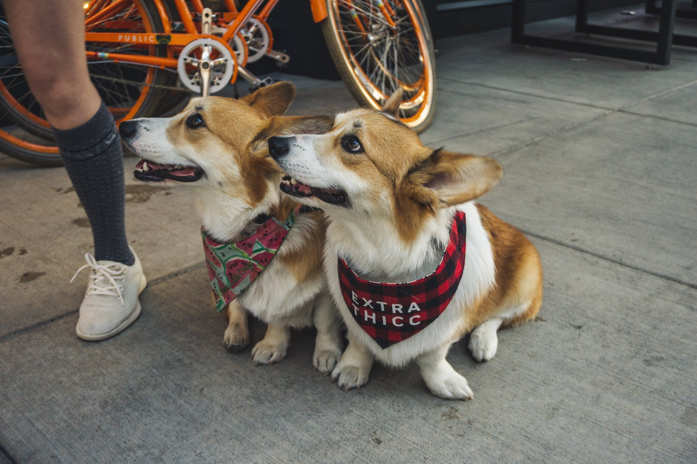
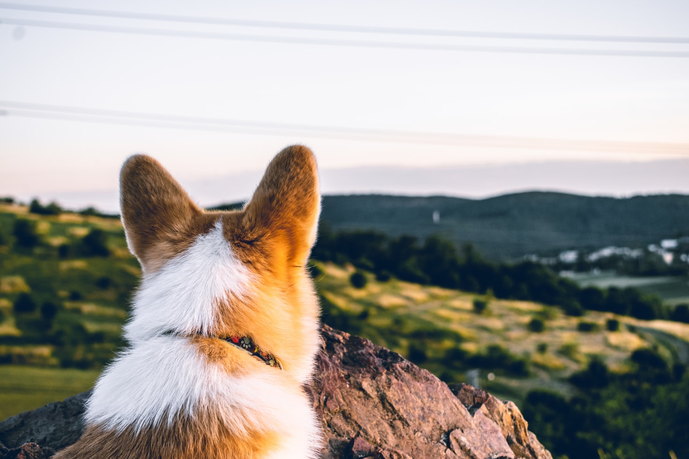
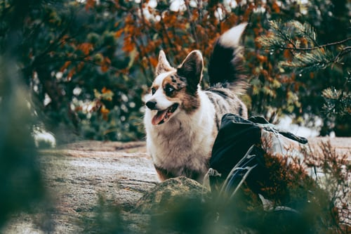
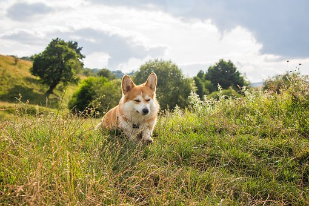
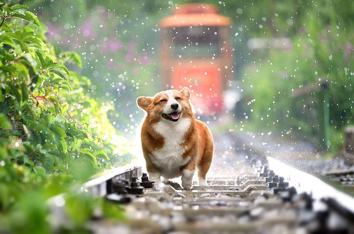
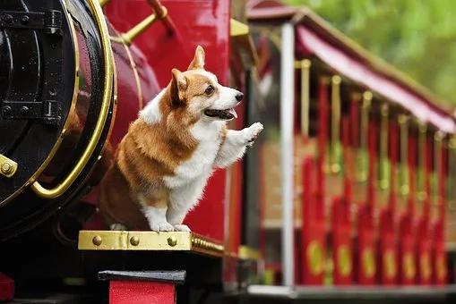
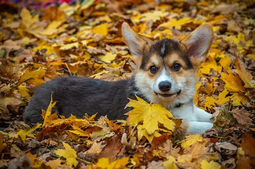
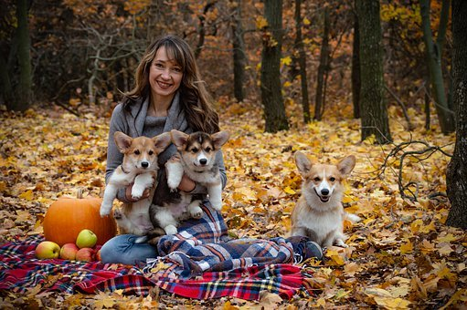

10 Fun Facts About Corgis
- There are two distinct breeds of corgis.
- The cardigan welsh corgi is the older breed.
- Pembrok welsh corgis have a considerable history as well.
- The kennel club originally lumped the two breeds together.
- Corgis were originally used as herders.
- According to welsh legend, fairies ride them.
- The royal family loves the pembroke welsh corgi.
- Corgis were used to predict princess Charlotte's name.
- Corgi means "Dwarf dog" in welsh.
- Southern California hosts a enormous corgi meetup.
1. THERE ARE TWO DISTINCT BREEDS OF CORGIS
There are two types of Welsh corgis: the Pembroke Welsh corgi and the Cardigan Welsh corgi. They are considered two entirely different breeds because they come from different ancestors. Their remarkable resemblance is a result of crossbreeding in the 19th century. If you’re trying to tell the two breeds apart, the most notable difference is that the Pembroke does not have a tail. On top of a tail, Cardigan Welsh corgis also have rounded ears, while Pembrokes generally have pointy ears.
2. THE CARDIGAN WELSH CORGI IS THE OLDER BREED
A warrior tribe of Celts brought the corgis in their aboriginal form to Cardiganshire, Wales around 1200 BCE, which means corgis have been in Wales for over 3000 years. This early breed was a member of the Teckel family of dogs that went on to include the dachshund.
3. PEMBROKE WELSH CORGIS HAVE A CONSIDERABLE HISTORY AS WELL
Although no one knows for sure, most agree that the Pembroke Welsh corgi dates back to 1107 CE when Flemish weavers migrated to Wales. The Spitz-type dog bred with the original Cardigan corgis to produce the Pembroke Welsh corgis we know today.
4. THE KENNEL CLUB ORIGINALLY LUMPED THE TWO BREEDS TOGETHER
The two types of corgis were registered as one in 1925, leading to a lot of stress among breeders. Often a judge would favor one breed over the other, which would lead to controversies at dog shows. After nearly a decade of (pretty adorable) strife, the breeds gained separate recognition in 1934.
5. CORGIS WERE ORIGINALLY USED AS HERDERS
The Welsh used the short dogs as herders as early as the 10th century. In those days, pastures were considered common land, so there were no fences. In order to keep a farmer’s cattle together and separated from other herds, corgis would nip at their legs to herd them. Because of their closeness to the ground, corgis had easy access to the cows’ ankles and were difficult targets of the retaliatory kicks of cattle.
6. ACCORDING TO WELSH LEGEND, FAIRIES RIDE THEM
Some say that the corgi is an “enchanted dog” favored by fairies and elves. At night the magical creatures would use the dogs to pull their carriages and be their steeds in battle. According to legend, the markings on a corgi’s coat suggest the faint outline of a saddle and harness.
7. THE ROYAL FAMILY LOVES THE PEMBROKE WELSH CORGI
Queen Elizabeth II has had more than 30 corgis in her lifetime. Though her last two corgis—Whisper and Willow—have both recently passed away, she does still have two dorgis (corgi/dachshund mixes) named Candy and Vulcan. The Queen met her first corgi when King George VI brought a male pooch home from a kennel in 1933. Named Dookie, the dog was an immediate hit with the future queen and her sister, Princess Margaret. After a second corgi named Jane entered the picture, the canine couple had a litter of puppies, two of which were kept. The Queen received another dog named Susan for her 18th birthday—from there, the collection of corgis really gained momentum. Some of the royal corgis bred with Princess Margaret’s dachshund Pipkin to create dorgis.
8. CORGIS WERE USED TO PREDICT PRINCESS CHARLOTTE'S NAME
In the spring of 2015, when Prince William and Kate Middleton were awaiting the birth of their second child, people are already taking bets on the name. Gambling company Ladbrokes used corgis in an attempt to predict what the name would be. The company’s ad featured 10 corgis wearing vests with different names in a race to predict what the name of the child would be. The corgi sporting the name Alexandra won the race. Princess Charlotte was born on May 2, 2015.
9. CORGI MEANS "DWARF DOG" IN WELSH
According to the Oxford English Dictionary, cor means dwarf and gi means dog.
10. SOUTHERN CALIFORNIA HOSTS A ENORMOUS CORGI MEETUP
SoCal Corgi Beach Day started as a humble meet-up event at Huntington Beach in 2012. The first event attracted just 15 dogs; the last one had more than 1100 corgis in attendance. The event happens three times a year.
Reasons why you need a Corgi
- They are very intelligent
- They are family friendly
- They are good watchdogs
- Huge personalities
- They pull goofy faces
- The Sploot
- They’re extremely loyal
- They love to cuddle
- They’ve got lots of energy
- Sociable
- Gorgeous ears
- Their butts
Resource #1: 10 Fun Facts About Corgis
Resource #2: 10 Reasons You Need a Corgi in Your Life Right Now
Resource #3: 20 Reasons Why You Need A Corgi
Back to top